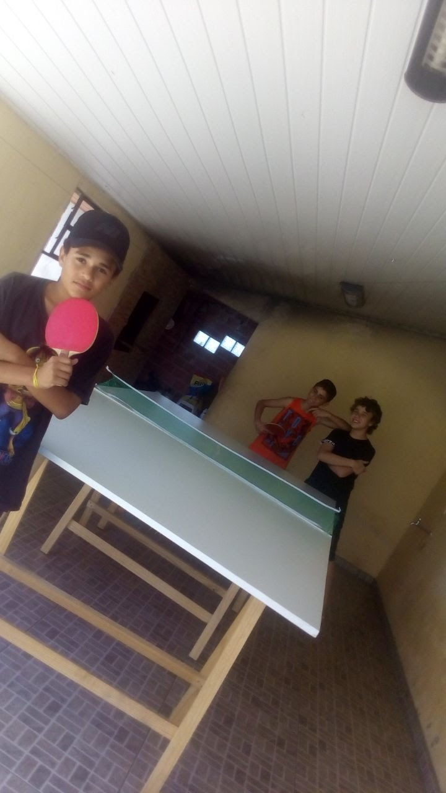
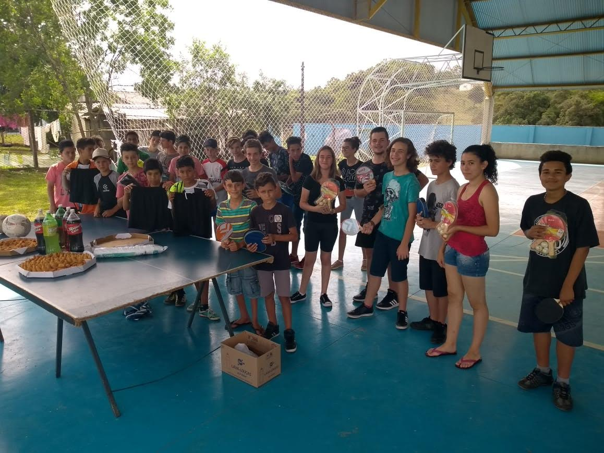
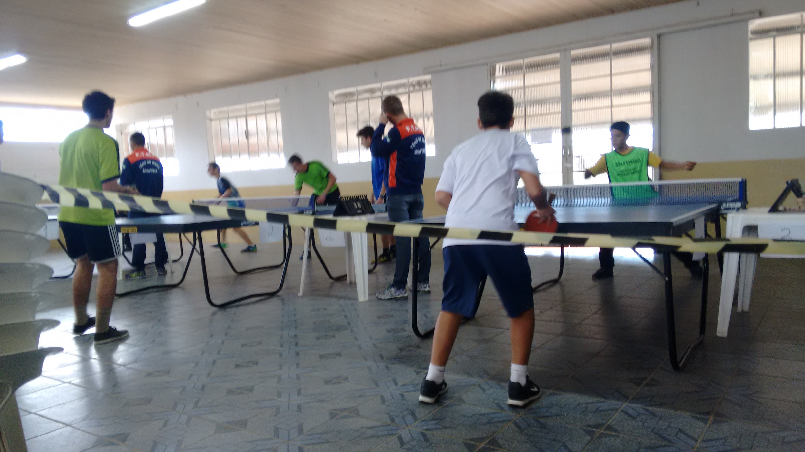
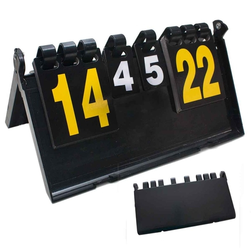
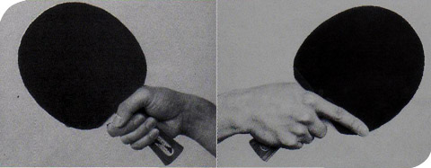
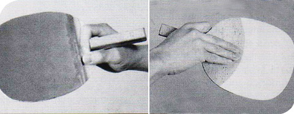
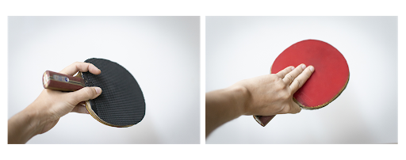

O esporte Tenis de Mesa sempre fez parte da minha vida, pois é muito divertido e fácil de entender. É também bastante acessivel a todos por não ser tão complexo e você poder até mesmo criar o seu modo de jogar, seja com familiares ou com os amigos.

Eu e meus amigos jogando na garagem dos meus pais.(foto de 2018)
Na minha antiga escola Luiza Rosa Zarpellon haviam projetos em que todos os alunos poderiam participar. Havia o de tenis de mesa, de futsal, e o volei. Todos esses projetos aconteciam no contra-turno, e foi aí que eu comecei a me interresar pelo esporte.

Confraternização do final do ano de 2018, juntando todos os projetos.
Aconteciam compeonatos entre os alunos da escola apostando chocolate e outras variedades, e campeonatos regionais em que o professor nos levava. Ao mesmo tempo em que me divertia, eu também treinava.
Campeonato entre os alunos do projeto.(Eu sou o do meio)
Sobre o Tênis de Mesa:
O tênis de mesa, também chamado de ping-pong, é um esporte criado na Inglaterra, no século XIX. É um dos esportes mais populares que existem, chegando a um número estimado de cerca de 300 milhões de praticantes em todo o mundo.
O jogo, que é uma adaptação do tênis de quadra, consiste na disputa de pontos entre jogadores que golpeiam a bola com suas raquetes sobre a área de jogo (mesa). O objetivo é impedir que o adversário consiga realizar a mesma ação e devolva a bola para a área de jogo.
Assim, o atleta vencedor é aquele que obtém mais êxitos dentro do número de sets em disputa. Os sets são disputados e vence o primeiro jogador que atingir a marca de onze pontos ou dois pontos de vantagem, no caso de empate em dez pontos.

Campeonato regional de tenis de mesa em Fernandes Pinheiro.(Foto de 2017)
-Acessórios e equipamentos para o jogo:
•Mesa
(2,74 m de comprimento, 1,52 m de largura e 0,76 m de altura).
•Bola
(tamanho: 40 mm; nas cores branca ou laranja. A bola, quando abandonada a uma altura de 30 centímetros da mesa, deve quicar a uma altura de 23 centímetros).
•Raquetes
(de madeira, com uma cobertura de borracha com uma face preta e a outra vermelha).
•Rede
Raquetes (de madeira, com uma cobertura de borracha com uma face preta e a outra vermelha).
•Uniformes
(camiseta, calções, meia e tênis. A camiseta e os calções precisam contrastar com a cor da bola)
Marcação de Pontos

Marcador de pontos geralmente usado nas competições.
Os atletas fazem pontos quando um dos adversários:
Erra o saque.
Não consegue devolver da bola.
Toca na bola duas vezes seguidas.
Deixa a bola tocar em seu campo duas vezes consecutivas.
Move a mesa de jogo.
Toca a rede ou seus suportes.
Toca a mesão com a mão durante a jogada.
Empunhaduras das raquetes
Atualmente nesse esporte existem três maneiras de segurar a raquete, são elas:
Empunhadura clássica

Esse tipo de empunhadura permite golpes com as duas faces da raquete: forehand e backhand, mas exige uma maior movimentação do atleta.
Caneta

Esse tipo de empunhadura é muito utilizado por jogadores brasileiros e asiáticos. Como só se usa um dos lados da raquete, há uma maior dificuldade de realizar os golpes no lado fraco (esquerda para destros e direita para canhotos).
Classineta

A classineta é um misto entre as duas empunhaduras tradicionais. Apesar de assemelhar-se com a empunhadura de caneta, permite atacar a bola com as duas faces da raquete.
Rulyan Eduardo dos Santos.
Informática 3° Ano Tarde
Institudo Federal do Paraná Campus Irati
R. Pedro Koppe, 100 - Vila São João, Irati - PR, 84507-302